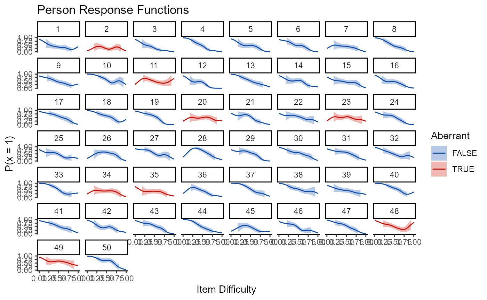

rupp_vignette.RmdRupp (2013) created a framework to assist researchers in identifying and handling person-misfit in item response theory (IRT). Rupp’s framework consists of five steps,
statistical detection using local and global fit measures (either parametric or nonparametric),
numerical tabulation, or summarization of the incidence of each type of aberrant response pattern,
graphical exploration such as person response functions (PRFs),
quantitative explanation using additional modeling, and
qualitative explanation.
The wizirt package is designed to facilitate the wider spread use of this framework in Psychometric research. With this end in mind, this vignette walks through the use of wizirt for PFA as desccribed by Rupp (2013).
First, users need to load wizirt.
library(wizirt)
The data used in this example are not publicly available, but a practice data set is available in wizirt.
After loading wizirt, users can run a model with the wizirt function
wizirt_fit <- wizirt::wizirt(data = responses, item_type = "Rasch")
Here I specify my data and I designate the model as a Rasch model. The first step of Rupp’s framework asks for global and local person-fit statistics. At this time, wizirt does not calculate local person-fit, but global fit statisics can be calculated using the irt_person_fit() function.
pfa <- irt_person_fit(wizirt_fit, stats = c("Ht"))
These fit statistics, as well as the person abilities and the response patterns (step 2) can be displayed using the print() function.
print(pfa, patterns = T, item_order = "by_diff") %>% dplyr::mutate(dplyr::across(c(ability, std_err, Ht, Ht_cut), .fns = round, 2)) %>% reactable::reactable()
By specifying the item order as “by_diff” the responses patterns are now ordered by the difficulty of the item.
Rupp’s step 3 asks for person-fit to be explored graphically. The nonparametric person response function is used for this in wizirt.
plot(wizirt_fit, type = "np_prf")

Rupp’s step four instructs researchers to try to explain reasons for person misfit. This is done with the irt_model_pfa() function, which allows for the inclusion of predictors.
mod <- irt_model_pfa(wizirt_fit, pfa, bins = 10, predictors = lapply(data[1:50 ,c("School", "center")], scale) ) mod$icc
## Ht
## ICC_adjusted 0.05162003
## ICC_conditional 0.05098615summary(mod$models$Ht)
## Cov prior : ids ~ wishart(df = 3.5, scale = Inf, posterior.scale = cov, common.scale = TRUE)
## Prior dev : 4.3663
##
## Linear mixed model fit by REML ['blmerMod']
## Formula: Ht ~ (1 | ids) + .
## Data: mlm_data
##
## REML criterion at convergence: 119.6
##
## Scaled residuals:
## Min 1Q Median 3Q Max
## -2.85774 -0.71649 0.03532 0.64954 2.49714
##
## Random effects:
## Groups Name Variance Std.Dev.
## ids (Intercept) 0.003619 0.06016
## Residual 0.066498 0.25787
## Number of obs: 481, groups: ids, 50
##
## Fixed effects:
## Estimate Std. Error t value
## (Intercept) 0.1386853 0.0414454 3.346
## ids -0.0002742 0.0012367 -0.222
## ability 0.1547125 0.1169090 1.323
## bin 0.0064304 0.0040928 1.571
## School -0.0064841 0.0155816 -0.416
## center -0.0061352 0.0148359 -0.414
##
## Correlation of Fixed Effects:
## (Intr) ids abilty bin School
## ids -0.764
## ability 0.389 -0.507
## bin -0.543 0.001 -0.009
## School 0.250 -0.330 0.171 0.004
## center 0.109 -0.137 0.050 -0.003 0.006These first four steps should be used in conjunction with a qualitative explanation step, something that cannot be done in wizirt.